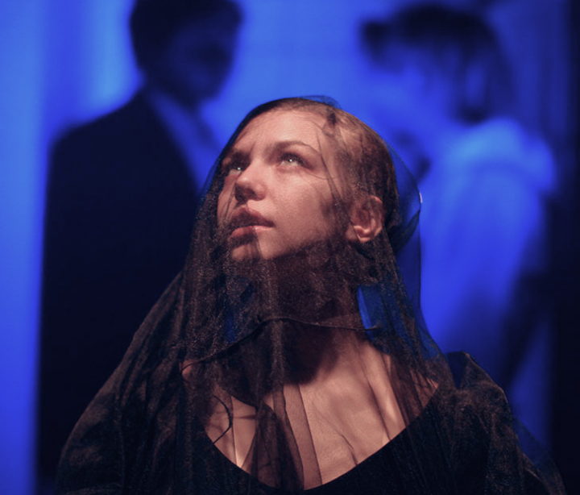

С_училища
Пьеса о демоническом обаянии студентки ПТУ и ее роковой роли в жизни преподавателя философии.
12 мая 20:00

Семён Серзин сделал читку этой пьесы в рамках основной программы Любимовки-2017, Варочный Цех предоставил грант на постановку, а Московский драматический театр имени А.С. Пушкина принял спектакль в репертуар.
1 ч. 15 мин. | 18+
Драматург
Роберт Аскинс
Перевод
Оксана Алёшина
Адаптация текста
Валерий Печейкин
Режиссёр
Юрий Муравицкий
Актёры
Фёдор Кокорев, Коля Ноекёльн, Ксения Чекина, Александр Пронькин, Владимир Морозов, Светлана Маршанкина
С_училища
Санкт-Петербург 2020